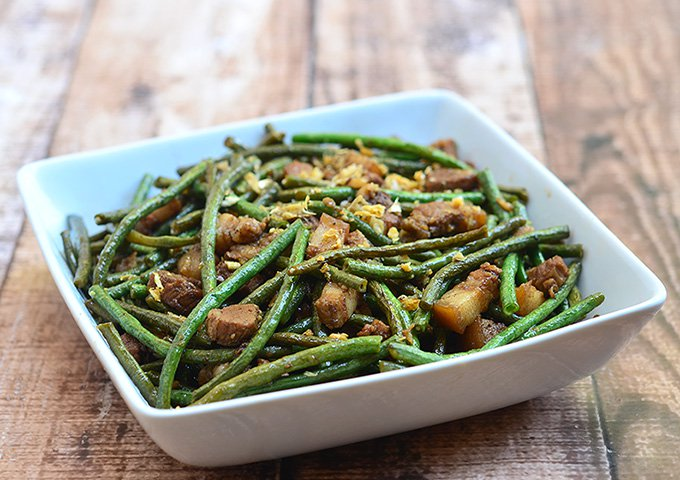

Best Filipino Recipe

Adobong Sitaw
Prep time
10 mins
Cook time
25 mins
Total time
35 mins
SERVES: 4
Ingredients
4 tablespoons cooking oil
1 lb string beans (sitaw), cut in 2 inch length
¼ lb pork belly, thinly sliced (optional)
½ cup soy sauce
⅓ cup vinegar
1 medium-sized onion, thinly sliced lengthwise
4 to 6 cloves garlic, crushed
½ teaspoon ground black pepper
1 cup water
Instructions:
Heat oil in a pan and sear the pork.
When oil and juice comes out of the pork, add garlic and onions then cook for 2 minutes.
Pour-in the soy sauce, vinegar, and water then bring to a boil.
Shake-in the ground black pepper and stir.
Cover and simmer for 15 minutes or until the pork is tender.
Add the string beans and cook for 3 to 5 minutes.
Turn off the heat and transfer to a serving bowl.
Serve hot with steamed rice
Share and enjoy!